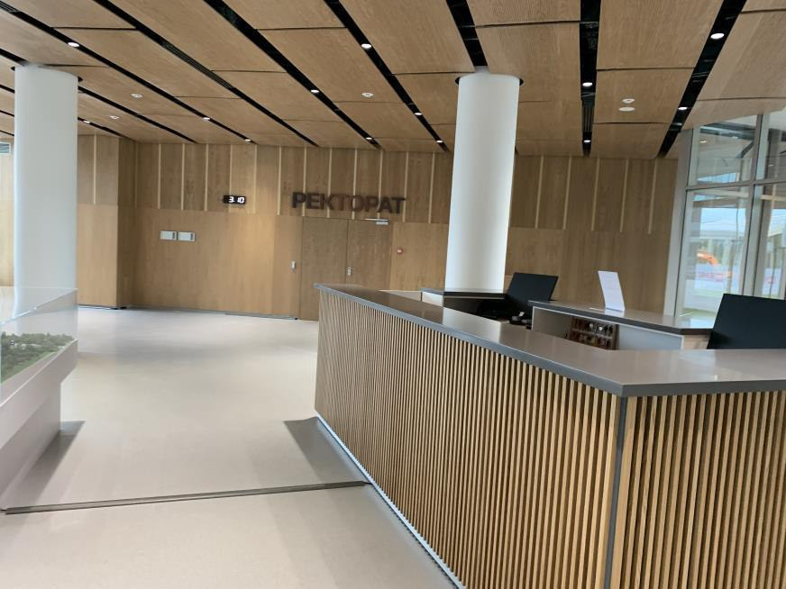

Подбор · Поставка · Монтаж
Стеновые панели
Потолочные панели
Двери
Комплексные решения для внутренней отделки: от выбора основы и декора до монтажа и исполнительной документации.

В презентации
Материалы, комплектации и опыт монтажа
- Стеновые панели
Econom, Interior, Practic; основы панелей, отбойные доски и профили. Открытый и скрытый монтаж, приёмка и уход.
- Потолочные системы
Mercury для Т-24 и Mercury CLIP-IN: размеры, материалы, покрытия и варианты для чистых помещений.
- Двери
Назначение и конструкция дверных блоков, варианты отделки и заполнений. Все 17 комплектаций из каталога.
- Опыт РесурсПроекта
«Сенеж», Рязанский проспект, медицинский центр Банка России и объекты из портфолио компании.
Материал для дальнейшей работы
Промпт презентации
Структура, источники и требования для следующего обновления презентации.